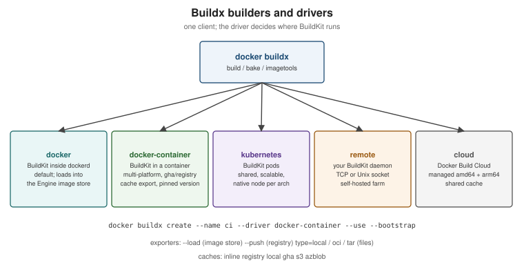

BuildKit and Buildx
|
This content was generated with the assistance of AI and should be verified against the official documentation before being relied on in production. |
Since Docker Engine 23.0 every docker build runs on BuildKit through the Buildx client. The defaults are enough for
a laptop, but CI pipelines, multi-architecture images and supply-chain metadata all depend on features that need a
little configuration: builders and drivers, exporters, remote caches, attestations and Bake. This page covers them
for Buildx 0.37.x and BuildKit 0.33.x with the docker/dockerfile:1 frontend under Docker Engine 29.8.x; how to
use them from GitHub Actions is on Docker CI/CD with GitHub
Actions.
BuildKit in one paragraph
BuildKit turns a build definition into a graph (LLB, "low-level build") and solves it. A frontend — the Dockerfile
frontend selected by # syntax=docker/dockerfile:1, or another one — produces the graph; the solver runs
independent vertices in parallel, skips any stage the requested target does not depend on, and caches every vertex
by content. Compared with the legacy builder this gives parallel multi-stage builds, RUN --mount, secrets that
never touch a layer, multi-platform output, pluggable exporters and caches, and build attestations. Derived from
BuildKit.
Builders and drivers
A builder is a BuildKit instance that Buildx sends builds to. How that instance runs is its driver:

| Driver | Where BuildKit runs | Use it for |
|---|---|---|
|
Inside |
Local builds whose result goes straight into the Engine’s image store |
|
In a dedicated container managed by Buildx |
Multi-platform builds with the classic image store, remote cache export ( |
|
In pods of a Kubernetes cluster |
Shared, scalable builders; native nodes per architecture |
|
An existing BuildKit daemon you manage (TCP or Unix socket) |
Self-hosted build farms |
|
Docker Build Cloud |
Managed builders with native amd64/arm64 and a shared cache (a Docker subscription feature) |
docker buildx ls # builders and their platforms
docker buildx create --name ci --driver docker-container --use --bootstrap
docker buildx inspect ci
docker buildx build --builder ci -t myorg/orders:dev --load .
docker buildx rm ciDerived from Builders and
Build drivers. With the containerd image store (the Engine 29
default on fresh installs) the docker driver can itself build and store multi-platform images and attestations,
which removes the most common reason for a docker-container builder on a laptop.
Multi-platform builds
A multi-platform image is an image index with one manifest per platform (see Images, Layers and Tags). Buildx builds all platforms in one command:
docker buildx build --platform linux/amd64,linux/arm64 -t registry.example.com/myorg/orders:1.4.0 --push .
docker buildx imagetools inspect registry.example.com/myorg/orders:1.4.0--platform linux/amd64,linux/arm64"] bx --> a["linux/amd64 build
(native or emulated)"] bx --> b["linux/arm64 build
(native or emulated)"] a --> ma["amd64 manifest"] b --> mb["arm64 manifest"] ma --> idx["Image index (manifest list)"] mb --> idx idx --> reg["Registry tag orders:1.4.0"]
There are three ways to produce the non-native platforms:
-
Emulation with QEMU — BuildKit runs foreign binaries through
binfmt_mischandlers. Docker Desktop has them preinstalled; on Linux rundocker run --privileged --rm tonistiigi/binfmt --install all(ordocker/setup-qemu-actionin CI). Simple, but compiling under emulation is several times slower. -
Native nodes — a builder with one node per architecture (
docker buildx create --append), or Docker Build Cloud. -
Cross-compilation — run the compiler on the build platform and target the other one. The predefined arguments
BUILDPLATFORM,TARGETPLATFORM,TARGETOSandTARGETARCHmake this explicit:
# syntax=docker/dockerfile:1
# The JDK stage always runs natively; Java bytecode is platform-independent
FROM --platform=$BUILDPLATFORM eclipse-temurin:25-jdk AS build
WORKDIR /src
COPY . .
RUN --mount=type=cache,target=/root/.m2 ./mvnw -B -ntp package -DskipTests
# The runtime stage is resolved per target platform (amd64 and arm64 JRE variants)
FROM eclipse-temurin:25-jre
ARG TARGETARCH
RUN echo "building the runtime layer for ${TARGETARCH}"
COPY --from=build /src/target/*.jar /app/app.jar
ENTRYPOINT ["java", "-jar", "/app/app.jar"]Derived from Multi-platform builds. For JVM applications this is the ideal case: Maven runs once, natively, and only the JRE base differs per platform.
Exporters: where the result goes
| Output | Meaning |
|---|---|
|
Load the image into the local Docker image store (default for the |
|
Push the image, its index and attestations to a registry |
|
An image in the builder, optionally pushed ( |
|
An OCI layout or Docker tarball on disk |
|
The final stage’s filesystem as files — useful to extract build artifacts such as a JAR or test reports |
docker buildx build --target test --output type=local,dest=./test-reports . # copy a stage's files out
docker buildx build --output type=oci,dest=orders.oci.tar -t orders:1.4.0 .Derived from Exporters overview.
Remote cache backends
A builder’s local cache is lost when an ephemeral CI runner disappears. Cache backends export it and import it on the next run:
| Backend | Stores the cache in |
|---|---|
|
The image itself (only |
|
A separate cache image in a registry ( |
|
A directory — combine with |
|
The GitHub Actions cache service; the recommended choice inside GitHub Actions workflows |
|
An S3-compatible bucket or Azure Blob Storage |
mode=min (the default) exports only the layers of the final image; mode=max also exports intermediate stages,
which is what makes the dependency stage of a multi-stage build hit the cache next time.
docker buildx build --push -t registry.example.com/myorg/orders:1.4.0 \
--cache-from type=registry,ref=registry.example.com/myorg/orders:buildcache \
--cache-to type=registry,ref=registry.example.com/myorg/orders:buildcache,mode=max .Derived from Cache storage backends and
Registry cache. The gha backend is not supported by the
default docker driver; docker/setup-buildx-action creates a docker-container builder for exactly this reason
(see GitHub Actions cache).
Build checks
docker build --check evaluates the Dockerfile against rules such as JSONArgsRecommended (shell-form
CMD/ENTRYPOINT), FromAsCasing, SecretsUsedInArgOrEnv, UndefinedVar and WorkdirRelativePath without
building anything; a normal build prints the same warnings at the end.
docker build --check .
docker build --check --build-arg "BUILDKIT_DOCKERFILE_CHECK=error=true" . # fail on any violationThe same can be declared in the Dockerfile with # check=error=true or # check=skip=<rules>. Derived from
Checking your build configuration; every rule is listed in the
build checks reference.
Attestations: SBOM and SLSA provenance
BuildKit can attach two kinds of attestations to an image, stored as extra manifests in its image index:
-
an SBOM (SPDX) listing the packages in the image, generated by a scanner during the build;
-
SLSA provenance describing how it was built — the source, the build arguments, the builder, timestamps.
docker buildx build --sbom=true --provenance=mode=max \
-t registry.example.com/myorg/orders:1.4.0 --push .
docker buildx imagetools inspect registry.example.com/myorg/orders:1.4.0 --format '{{ json .SBOM.SPDX }}'
docker buildx imagetools inspect registry.example.com/myorg/orders:1.4.0 --format '{{ json .Provenance.SLSA }}'Derived from Build attestations, SBOM attestations and Provenance attestations. A minimal provenance attestation is added by default when pushing; attestations need an exporter that can store an image index (a registry push, or the containerd image store locally). Annotations — OCI metadata on manifests and indexes — are covered on Images, Layers and Tags.
Bake: builds as code
When a repository builds several images, or the same image with several variants, a long docker buildx build
command line becomes a Bake file. Bake reads HCL (or JSON, or a Compose file) describing targets, groups,
variables and matrices, and builds them in parallel:
# docker-bake.hcl
variable "TAG" {
default = "dev"
}
group "default" {
targets = ["orders", "billing"]
}
target "_common" {
platforms = ["linux/amd64", "linux/arm64"]
cache-from = ["type=gha"]
cache-to = ["type=gha,mode=max"]
labels = {
"org.opencontainers.image.source" = "https://github.com/myorg/services"
}
}
target "orders" {
inherits = ["_common"]
context = "orders-service"
tags = ["ghcr.io/myorg/orders:${TAG}"]
}
target "billing" {
inherits = ["_common"]
context = "billing-service"
tags = ["ghcr.io/myorg/billing:${TAG}"]
}docker buildx bake --print # resolved configuration, nothing built
TAG=1.4.0 docker buildx bake --push # build and push both targets
docker buildx bake -f compose.yaml # use the build sections of a Compose file as targetsDerived from Bake, Bake targets,
Matrix targets and
Building with Bake from a Compose file. docker/bake-action
runs the same file in GitHub Actions.
Build policies (introduction only)
Build policies validate a build’s inputs — base images, Git sources, downloaded files — against rules written in
Rego (Open Policy Agent), for example "base images must come from approved registries and carry provenance". They
are experimental (Buildx 0.31 or later, BuildKit 0.27 or later) and go beyond ADD --checksum, which only verifies
content. See Validating build inputs with policies.
Remote builders
Two managed alternatives to running BuildKit yourself are named here for completeness:
Docker Build Cloud (the cloud driver: native amd64 and arm64 builders with a
shared cache) and the Docker GitHub Builder
(reusable GitHub Actions workflows maintained by Docker that encapsulate runner selection, caching, provenance,
signing and multi-platform manifests).